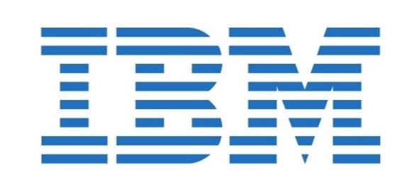

Madhumitha V
Last updated in February 2025
Interests
Computer Vision, Deep Learning, AI for Neuroscience, Explainability
Education
Aug 2023 - Present
GPA: 8.38/10
PhD in Artificial Intelligence
Aug 2019 - Jun 2023
GPA: 9.49/10
B.E in Artificial Intelligence & Machine Learning [Gold Medalist]
Delhi Public School Bangalore North
May 2019
93.4%
CBSE, PCMB [12th Std]
St. Vincent Pallotti School
May 2017
95.3%
ICSE [10th Std]
Experience

Data Scientist Intern
IBM India Systems Development Lab
IBM India Systems Development Lab
Feb 2023 – Jul 2023
Bangalore, India
- Worked with Team AI on IBM-Z systems.
- Built, tested, and delivered a prototype for deploying ML models (using SnapML) for Credit Card Fraud Detection on S/390x Z systems using the Triton Inference Server.
NeuRonICS Lab, DESE, Indian Institute of Science
Aug 2022 – Dec 2022
Bangalore, India
- Guided by Ms. Madhuvanthi and Prof. Chetan Singh Thakur.
- Trained Neural Network using Simultaneous Perturbation Stochastic Approximation techniques on MNIST for deployment on Neuromorphic hardware.
Publications
Madhumitha V, Sunayna Padhye, Shanawaj S Madarkar, Konda Reddy Mopuri
Under Review (A* conference)
Muthu Palaniappan, Madhumitha V, Santhi Natarajan, Sundharakumar KB, Ram Kishan Nekkanti, Manjunath N, Sanjay HM, Sudhir Jayanand, Prasad Patnaik BSV
SBMT 2024 (Accepted)
Madhumitha V, Santhi Natarajan, Bharathi A, Manjunath Sargur Krishnamurthy
IEEE-EMBS BHI 2023
[URVoice Program]
I. S. Rajesh, D. Sri Lakshmi Priya, V Madhumitha, Shreyas Sreenivas
MARC 2023
[DOI: 10.1007/978-981-97-5231-7]
A. Bharathi Malakreddy, D. Sri Lakshmi Priya, V Madhumitha, Aryan Tiwari
ICICC 2023
[DOI: 10.1007/978-981-99-4071-4]
V Madhumitha, Santhi Natarajan, B Jayanand Sudhir, Sanjay H M, Manjunath N
ConfAI 2022 (Accepted)
Projects
Deep Insights: Understanding Brain Disorders with AI [PhD Thesis]
Dec 2023 - Present | DiL Lab, Guide: Dr. Konda Reddy Mopuri
- Employing Deep learning models in diagnosis of Brain disorders using sMRI and fMRI modalities.
- Providing interpretable solutions for the assistance of doctors in various disorder diagnosis like Alzheimer’s disease, Schizophrenia, Parkinson’s disease, etc.
Hallucination Detection in Large Language Models
Jan 2024 - Apr 2024 | NLP coursework, Advisor: Dr. Maunendra Desarkar
- Performed a comparative study of SOTA models (GPT-3, LED, BART-Base, T5) in generating hallucinated text using BERT Score, Question Answering, and N-gram variants of SelfCheckGPT.
Blood report (CBC-DBC) generation using blood smear images
Jan 2024 - Apr 2024 | IVP coursework, Advisor: Dr. Sumohana Channappayya
- Employed Image processing techniques to segment out RBCs and WBCs, and count them.
- Trained YOLO model to detect and classify the 5 major classes of WBC cells.
Radiogenomics approach for Neurocognitive disorders
Dec 2021 - Jan 2023 | BMSIT&M, Advisors: Dr. Santhi Natarajan, Dr. Bharathi Malakreddy
- Applied Radiomics and Genomics techniques on a patient’s data and combined the results using statistical mapping to identify a neurocognitive disorder.
- Worked on employing genetic algorithms and GATK pipeline for the Genomics part of the research.
Achievements
Second best project in NLP coursework
Apr 2024
- Project on “Hallucination detection in Large Language Models” was awarded 2nd best project.
Awarded GOLD MEDAL from Visveswaraya Technological University, Karnataka
Aug 2023
- Secured First Rank in Bachelor of Engineering (Dept. of AI&ML) in Karnataka State.
Winner of Project-based learning, Open Day, BMSIT&M
Jul 2022
- Project on “Early detection of Alzheimer’s Disease using Machine Learning techniques.”
Special Recognition Award, Srishti Hackathon 2022
Apr 2022
- State-level competition, conducted by Yuvaka Sangha in association with BMS College of Engineering.
- Presented a project on “Smart System for Patient Health Records Management,” integrating AI with Medical Transcriptions.
Illustrator and Coordinator of NATYRA
Jun 2022
- Contributed paintings to NATYRA, a handbook published on behalf of Eco club [OIKOS], BMSIT&M.
- Was also a coordinator for the release of the handbook.
Coursework
Matrix Theory, Probability, Advanced Data Structures and Algorithms, Convex Optimization, Foundations of Machine Learning, Deep Learning, Natural Language Processing, Image and Video Processing, Explainability in Machine Learning, Introduction to Brain & Neuroscience.
Teaching Assistantship
- Deep Learning (Spring 2024 & 2025)
- AIET course by TalentSprint on Computer Vision (16th & 23rd Feb, 2025)
- DRDO Workshop on Deep Learning and Computer Vision algorithms (11th − 13th Jul, 2024)
Sub-Reviewer
ICLR 2025, WACV 2025, TPAMI 2024, ECAI 2024
Technologies
Languages: Python, C, HTML, CSS, SQL
Packages: Linux, LaTeX, Docker, Git
Frameworks/Libraries: Numpy, Pandas, Scikit-learn, Pytorch, Tensorflow,
OpenCV, Matplotlib, Seaborn
Conferences Attended
- ICVGIP, IIIT Bangalore (Dec 2025)
- NCVPRIPG, IIST Trivandrum (Aug 2025)
- ICVGIP, IIT Ropar (Dec 2024)
Languages
English [Technical Proficiency], Telugu, Kannada, Tamil